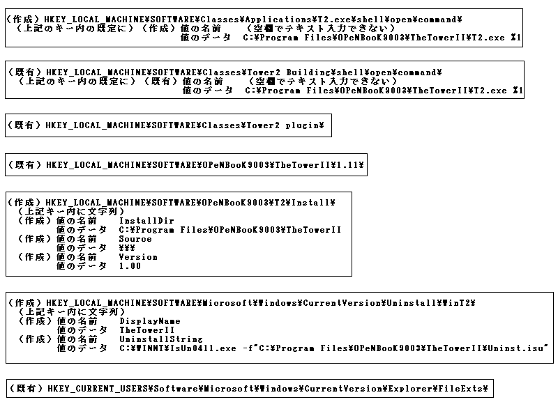
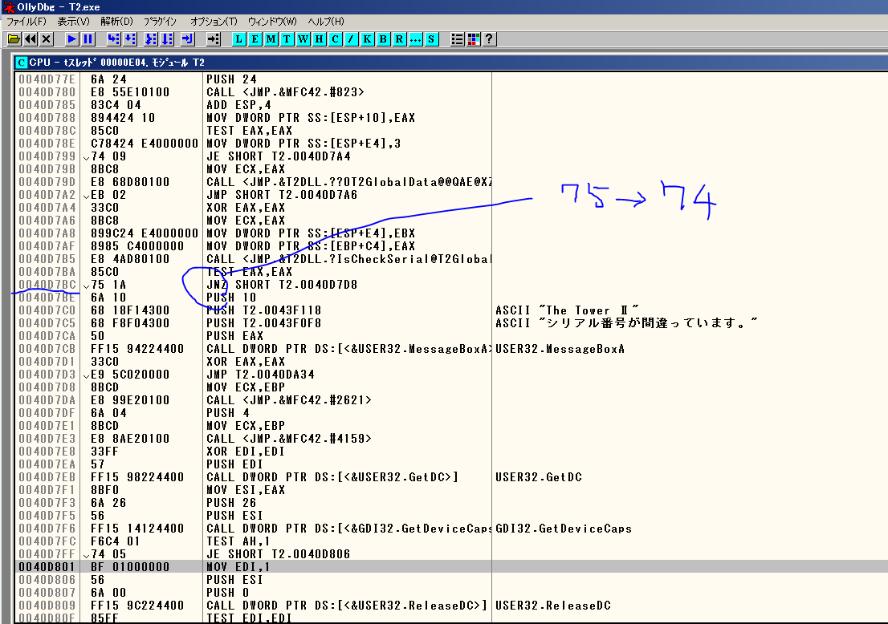

| 名称 | The TowerⅡ ～巨大建造物シュミレーション ザ・タワーⅡ |
| OS | Microsoft Windows 95/98（日本語版） |
| メモリ容量 | ３２MB（４８MB以上推奨） |
| 周辺機器 | 4倍速以上のCD-ROMドライブ |
| ディスプレイ | 640×480ドット以上で256色が表示可能な物 |
| CPU | Pentium133MHz（166MHｚ以上推奨） |
| ハードディスク | 空き容量５０MB以上（通常インストール時） |
| 150MB以上（ムービーを含むフルインストール時） | |
| サウンド | DirectX５対応のサウンドカード |
| 標準価格 | 9,800円（税別） |
| 開発・販売元 | オープンブック9003株式会社 |
| 発売年 | 1998年 |
| バーコード | 4 988918 014028 |
| ホームページ | http://www.openbook9003.co.jp（現在はありません） |
| バージョン | MacバージョンとWinバージョンの二種類 |
① インストールは普通に行う。
② アップデータCD－ROMもしくはインターネットからの修正プログラム(ダウンロードコーナーでダウンロードできます)を適応する。
③ 再起動する。
④ 起動するときにシリアル番号の入力を求められるので入力する。＊注１
⑤ 「256色で表示しますか」のダイアログを無視して進める。＊注２
＊注１： シリアル番号は初めに起動するときだけでいいです。その後はT2Pref.datに記録されます。もしシリアルを忘れてしまった場合除いて見てください。
＊注２： ２５６色でゲームを起動した場合には背景が変わりません。ゲーム自体に支障はありません。
Windowsでの動作Ⅰがうまくいかなかった場合はレジストリの変更が必要になります。以下の方法を順ずる前にレジストリのバックアップを強く推奨します。
インストールが順調に進んだ後に最後のエラー「RegDBCreateKeyEx failed」でOKを押さずに ALT+CTRL+DELETEでタスクマネージャー起動して実行していたｾｯﾄｱｯﾌﾟを強制終了させます 。その後以下の項目をレジストリエディタより追加、編集してください。
Windows 7で起動できない原因がはっきりしていません。以下の事を自己責任でお試しください。上手く行かなかった場合、掲示板にOSのバージョンとその状況をご報告お願いします。
インストーラーの修正が必要です。Windows Installer の修復によるインストールトラブル対処方法（Windows）を参考に、インストーラーの修正を行なってください。
以下のファイルがインストールされているか確認し、されていない場合はインストールしてください。
・Visual Basic 6.0 SP6 ランタイムライブラリの詳細情報 : Vector ソフトを探す！
・Microsoft .NET FrameWork 1.1 ランタイムパッケージの詳細情報 : Vector ソフトを探す！
・ActiveX版のFlash Player（IEブラウザでリンクを開いてください） ：Adobe - Adobe Flash Playerのインストール
・OSの更新 ：Windows Updateを使用して、Windowsを最新の状態にセットアップしてください。
・DirectXの更新：Download: DirectX Redist (June 2010) - Microsoft Download Center - Download Details
ファイルごと強引にコピーする方法です。
以下のファイルがインストールされているか確認し、されている場合はアンインストールしてください。
・Microsoft Office IME2010
OSの再インストールを行ってください。
掲示板へご報告お願いします。ソフトのバージョンが問題の可能性もあるため、入手状況の記載（初期「1998年」に買った、後期に買った、中古屋で買った、友だちにもらった、ネットでゴニョゴニョした等）をお願いします。
OllyDbgでシリアルのチェック部分をスキップする処理を実行ファイルに追加してください。
マップを入れたりすると実行ファイルが変わってしまったりするので、その都度やってください。